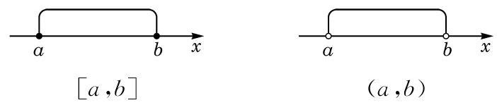
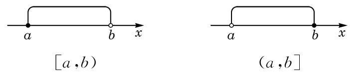
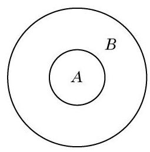
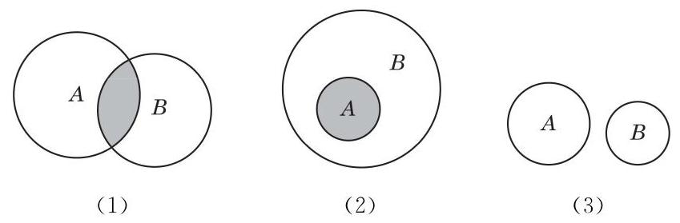
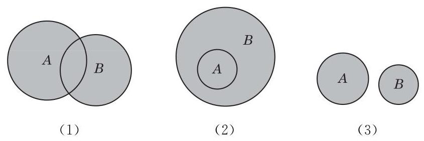
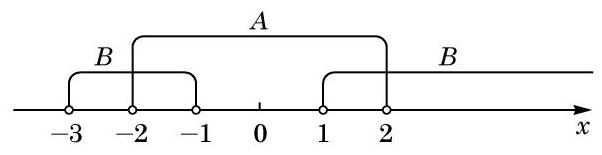
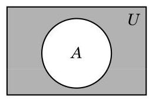

第1章 集合与逻辑
数学语言十分精确, 不容易产生歧义. 集合是现代数学语言的重要组成部分. 使用集合的语言, 可以准确、简洁地表示所要研究的对象, 更好地描述所研究的对象之间的关系.
数学作为很多其他学科的基础和工具, 其内涵及语言都是按照逻辑的方式来组织的. 根据正确的前提, 按照严格的逻辑推理, 总是能够得到正确的结论.
在数学语言的表达方面，有一些公认的特殊约定，努力学习并遵循这些约定，能够更好地在数学领域里与他人开展交流, 对进一步的学习和研究都非常有益.
1 集合的概念
康托(G. Cantor, 1845- 1918), 德国数学家, 集合论创始人.
我们经常需要把满足一定要求或具有一定特征的对象放在一起或归为一类. 例如:
(1)申辉中学高一(1)班的全体学生；
(2)所有不大于 100 的自然数；
(3)直线 上的所有点；
(4)不等式 的所有解;
(5)太阳系的所有行星.
如果 是集合 的元素，就记作 ，读作“ 属于 ”； 如果 不是集合 的元素，就记作 ，读作“ 不属于 ”. 例如,若 是由数 组成的集合,则 .
集合的元素是确定的. 也就是说, 给定一个集合, 一个对象在不在这个集合中就确定了. 例如, “我国的直辖市”组成一个集合, 北京、上海、天津、重庆在这个集合中, 而杭州、南京、深圳等城市不在这个集合中.
一些不确定的对象不能组成一个集合. 例如, “我们班里高个子的同学”不能组成一个集合. 因为“高个子”的标准不够明确、 具体, 所以 “我们班里高个子的同学” 是不确定的.
一个给定集合中的各个元素是互不相同的, 即一个元素在同一个集合中是不能重复出现的.
如果两个集合 与 的组成元素完全相同,就称这两个集合相等,记作 .
例题 1
例 1 判断下列集合是有限集还是无限集, 并说明理由:
(1)6 的正整数倍的全体组成的集合;
(2)600 的正约数的全体组成的集合;
(3)2019 年在上海出生的所有人组成的集合;
(4)给定的一条长度为 1 的线段上的所有点组成的集合.
答案与解析收起 / 展开
解(1)6 的正整数倍可表示为 ，其中 是正整数. 因为正整数有无限个, 所以 6 的正整数倍的全体组成的集合是一个无限集.
(2)600 的正约数一定是小于或等于 600 的正整数，其个数不超过 600 . 所以 600 的正约数的全体组成的集合是一个有限集.
(3)虽然 2019 年出生在上海的人比较多，但总数还是有限的. 所以 2019 年在上海出生的所有人组成的集合是一个有限集.
(4)因为该线段的二等分点、三等分点、四等分点……都是该集合中的元素，所以一条给定的长度为 1 的线段上的所有点组成的集合是一个无限集.
数学中, 常常需要用到数的集合. 数的集合简称数集. 常用的数集可用以下特定的符号来表示，见表 1-1.
表 1-1 常用数集的符号
例题 2
例 2 用符号“ ”或“ ”填空:
(1)0___N； (2)1___Z；
(3) ___Q； (4) ___R.
答案与解析收起 / 展开
解 (1) . (2) . (3) . (4) .
不含有任何元素的集合称为空集，记作 . 引进空集是有必要的. 例如,方程 没有实数解,我们就说它的实数解组成的集合是空集. 又如, 当两条直线平行时, 它们没有公共点, 就可说这两条直线的公共点组成的集合是空集. 在以后学习交集时, 我们还将进一步体会到引入空集的必要性.
练习 1.1(1)
练习1.1(1) · 1
- 判断下列各组对象能否组成集合. 若能组成集合，指出是有限集还是无限集；若不能组成集合, 请说明理由.
(1)上海市现有各区的名称；
(2)未位是 3 的自然数；
(3)比较大的苹果.
答案与解析收起 / 展开
- (1)能组成集合,是有限集. (2)能组成集合,是无限集. (3)不能组成集合, 因为 “比较大” 标准不明确.
练习1.1(1) · 2
- 用符号“ ”或“ ”填空:
(1) ___ ； (2)5___ ；
(3)-2___Q； (4)π___R.
答案与解析收起 / 展开
2 集合的表示方法
除了用自然语言描述集合，我们还有一些其他方法用来表示集合.
例题 3
例 3 用列举法表示下列集合:
(1)所有不大于 10 的正整数组成的集合;
(2)方程 的所有解组成的集合;
(3)集合 中任意两个不同元素之和组成的集合.
答案与解析收起 / 展开
解(1)所有不大于 10 的正整数组成的集合是 , .
(2)该方程的所有解组成的集合是 .
(3)该集合中任意两个不同元素之和组成的集合是 .
能用列举法表示的集合一般是有限集, 但对于一些有规律的无限集, 在不会引起歧义的前提下, 也可用列举法表示. 例如, 全体正偶数组成的集合可以表示为 .
集合还有另外一种表示方法.
在大括号内先写出这个集合中元素的一个记号, 再画一条竖线, 并在竖线的右边写上集合中所有元素具有的共同特征, 即
“集合中所有元素具有的共同特征”是指:
(1)在该集合中的元素都具有这个特征;
(2)不在该集合中的元素不具有这个特征.
这种表示集合的方法叫做描述法. 例如,方程 的所有解组成的集合可以表示为 . 又如,函数 图像上的所有点组成的集合可以表示为 .
例题 4
例 4 选择适当的方法表示下列集合:
(1)大于 0 且小于 10 的全体偶数组成的集合 ；
(2)被 3 除余 2 的所有自然数组成的集合 ；
(3)直角坐标平面上由第二象限与第四象限中的所有点组成的集合 .
答案与解析收起 / 展开
解 (1) 用列举法: .
(2)用描述法: .
(3)因为第二象限中所有点 具有的特征是 且 ,而第四象限中所有点具有的特征是 且 ,所以第二象限与第四象限中所有点具有的特征可统一地写为 ,于是可用描述法表示该集合:
数学中, 常常需要表示满足一些不等式的全体实数所组成的集合. 为了方便起见, 我们引入区间 (interval) 的概念.
当 且 时,规定:
满足不等式 的全体实数 组成的集合称为一个闭区间,记作 .
满足不等式 的全体实数 组成的集合称为一个开区间,记作 .
闭区间与开区间在数轴上的表示,如图 1-1-1 所示.

图 1-1-1
满足不等式 或 的全体实数 所组成的集合称为一个半开半闭区间,分别记作 .
半开半闭区间在数轴上的表示, 如图 1-1-2 所示.

图 1-1-2
这里的实数 统称为这些区间的端点.
此外,满足不等式 或 的全体实数 所组成的集合可分别用区间表示为 , 或 .
实数集 可用区间表示为 .
符号“ ” 读作“无穷大”.
例题 5
例 5 用区间表示下列集合:
结合例题, 试比较分别用自然语言、 列举法、描述法和区间表示集合时, 其各自的特点和适用对象.
(1) ；
(2)不等式 的所有解组成的集合.
答案与解析收起 / 展开
解 (1) 该集合可用区间 表示.
(2)因为不等式 的解是 ，所以它的所有解组成的集合是 .
练习 1.1(2)
练习1.1(2) · 1
- 用列举法表示下列集合:
(1)能整除 10 的所有正整数组成的集合;
(2)绝对值小于 4 的所有整数组成的集合.
答案与解析收起 / 展开
练习1.1(2) · 2
- 用描述法表示下列集合:
(1)全体偶数组成的集合;
(2)平面直角坐标系中 轴上所有点组成的集合.
答案与解析收起 / 展开
练习1.1(2) · 3
- 用区间表示下列集合:
(1) ；
(2)不等式 的所有解组成的集合.
答案与解析收起 / 展开
3 集合之间的关系
考察以下四组集合:
(1)C 是申辉中学高一(1)班的全体学生组成的集合，D 是申辉中学全体学生组成的集合;
(2)C是一平面上所有矩形组成的集合，D 是该平面上所有平行四边形组成的集合;
(3) ；
(4) 是奇数 .
容易发现,在上述每组集合中,集合 中的每个元素都属于集合 . 两个集合之间的这种关系是十分常见的.
对任何集合 ,规定

图 1-1-3
我们常用文氏图 (Venn diagram) 来直观表示集合以及集合之间的关系. 图 1-1-3 是 的文氏图.
上述四组集合中的每组都有 . 但是,第 (1)(2)组与第 (3)(4)组是有区别的. 在第(1)(2)组中，集合 中有些元素不属于集合 ,即 不是 的子集; 而在第(3)(4)组中,集合 中的每个元素都属于集合 ,即 .
对于集合之间的包含关系, 我们有下列结论:
(1) ；
(2)若 且 ，则 ；
集合关系中的“若 且 ,则 ”与实数大小关系中“若 且 , 则 ” 类似.
(3)传递性:若 且 ，则 .
由此,对第 (3)(4) 组集合, 成立; 而对第 (1)(2) 组集合, 不成立. 为此,我们引入真子集的概念.
定义 对于两个集合 与 ,如果 ,且 中至少有一个元素不属于 (即 不是 的子集),那么称集合 是集合 的真子集 (proper subset),记作 (或 ),读作“ 真包含于 ”(或“ 真包含 ”).
对第(1)(2)组集合， 成立.
对于常用的数集，我们有如下的包含关系:
例题 6
答案与解析收起 / 展开
解 由集合相等的定义，可知
此处为什么有两种情况?
分别解得 或
例题 7
例 7 确定下列每组中两个集合之间的关系:
(1) 是 12 的正约数 ;
(2) .
答案与解析收起 / 展开
解(1)因为 ，所以 .
(2)因为当 时， 中的元素 必定属于 ,所以 .
又因为 ,而 ,所以 .
例题 8
例 8 写出集合 的所有子集,并指出哪些是真子集.
答案与解析收起 / 展开
解 可以按照子集的元素个数分类:
不含任何元素的子集 1 个:空集 ；
含 1 个元素的子集 3 个: ；
含 2 个元素的子集 3 个: ；
含 3 个元素的子集 1 个: .
除集合 本身外,其余 7 个都是真子集.
练习 1.1(3)
练习1.1(3) · 1
- 判断下列说法是否正确, 并简要说明理由:
(1)若 且 ，则 ；
(2)若 且 ，则 ；
(3)若 且 ，则 .
答案与解析收起 / 展开
1.(1)该说法正确. 的意义是 “A 中的每一个元素都是 的元素”,因此 是 的元素.
(2)该说法错误. 例如, . 满足 且 , 但 与 不相等.
(3)该说法正确. 由 及 ,可知 . 另一方面, 不可能等于 , 否则将导致 且 ,这意味着 且 ,这是不可能的. 因此 .
练习1.1(3) · 2
- 用符号“ ”“=”或“⊂”填空:
(1) ___ ；
(2) ___ ；
(3) ___ .
答案与解析收起 / 展开
练习1.1(3) · 3
答案与解析收起 / 展开
4 集合的运算
先看一个校园生活的例子. 申辉中学高一年级的学生报名参加数学建模社与理学社. 这样, 除该校高一年级的全体学生组成的集合 外,还有参加数学建模社的学生组成的集合 ,参加理学社的学生组成的集合 ,两个社都参加的学生组成的集合 ,两个社中至少参加一个的学生组成的集合 ,还有未参加数学建模社的学生组成的集合 ,等等.
可以看到,集合 等都是集合 的子集, 集合 是由集合 与 的公共元素组成的,集合 是由集合 与 的所有元素组成的,集合 是由集合 中去掉 中的元素后剩下的元素组成的.
当集合 确定时, 如何确定集合 呢?
本节我们要从已知的集合出发，通过“交”“并”“补”的运算得到新的集合.
首先, 我们可以对任意两个集合取公共元素, 从而得到一个新的集合.
可以用文氏图直观地反映 的几种不同情况,如图 1-1-4 所示.

图 1-1-4
图 1-1-4(1)表示集合 与 既有公共元素又都有非公共元素的情况,此时阴影部分 既是 的真子集又是 的真子集; 图 1-1-4(2) 表示集合 是 的子集的情况,此时 ; 图 1-1-4(3)表示集合 与 没有公共元素的情况, 此时 .
例题 9
答案与解析收起 / 展开
解 由题意, 表示 既属于 又属于 ,即 是方程组
的解,所以 . 于是, .
其次, 我们可以把两个已知集合的所有元素放在一起组成一个新的集合.
定义 由所有属于集合 或属于集合 的元素所组成的集合,叫做集合 与 的并集 (union),记作 (读作“ 并 B”), 即
可以用文氏图直观地反映 的几种不同情况,如图 1-1-5所示,其中阴影部分表示 .

图 1-1-5
对照图 1-1-4 的三种情况，请各举一实例.
例 9 中, 表示二元一次方程组的所有解组成的集合. 它可以理解为两个一次函数 与 的图像的交点组成的集合.
对照图 1-1-5 的三种情况, 请各举一实例.
图 1-1-5(1)表示集合 与 既有公共元素又都有非公共元素的情况,此时 和 都是 的真子集; 图 1-1-5(2)表示集合 是 的子集的情况,此时 ; 图 1-1-5(3)表示集合 与 没有公共元素的情况.
例题 10
答案与解析收起 / 展开
解 在数轴上标出集合 与 ,如图 1-1-6 所示.

图 1-1-6
于是 .
例题 11
答案与解析收起 / 展开
解 因为 ,所以 的元素只能在 1、2、3 中取. 为了使得 中有 3,3 必须是 的一个元素. 至于 1、2 是否为 的元素，不会影响 的结果.
因此，满足条件的集合 一共有 4 个: ， .
最后, 我们介绍全集与补集.
在数学研究中, 所研究的对象往往是某个确定集合的一个子集或元素. 例如, 求方程的实数解时, 所有解组成的集合一定是实数集 的一个子集; 求三角形的内角的大小时,如果以度 为单位, 那么角的度数一定是开区间 中的一个元素; 等等. 这个确定的集合称为全集 (universal set),常用符号 表示. 它含有我们所要研究问题的全部可能的元素.
定义 设 为全集, 是 的子集. 由 中所有不属于 的元素组成的集合称为集合 在全集 中的补集 (complementary set),记作 (读作“ 补”),即
有时为了强调全集 ,集合 在全集 中的补集 也可以记作 .
当全集为实数集 时,有理数集 的补集 就是全体无理数组成的集合.

图 1-1-7
可以用文氏图直观地反映 ，如图 1-1-7，其中阴影部分表示集合 在全集 中的补集 .
例题 12
例 12 设全集 ,集合 , 集合 . 分别求: 及 .
答案与解析收起 / 展开
练习 1.1(4)
练习1.1(4) · 1
- 设 为全集 的任一子集,则
(1) ___；( 表示 的补集 的补集)
(2) ___；
(3) ___.
答案与解析收起 / 展开
练习1.1(4) · 2
答案与解析收起 / 展开
练习1.1(4) · 3
答案与解析收起 / 展开
习题 1.1
A 组
习题1.1A · 1
- 用列举法表示下列集合:
(1)10 以内的所有素数组成的集合;
(2) .
答案与解析收起 / 展开
习题1.1A · 2
- 用描述法表示下列集合:
(1)被 3 除余 1 的所有自然数组成的集合;
(2)比 1 大又比 10 小的所有实数组成的集合;
(3)平面直角坐标系中坐标轴上所有点组成的集合.
答案与解析收起 / 展开
习题1.1A · 3
- 集合 为实数 是指 ( )
A. 第一象限内的所有点组成的集合;
B. 第三象限内的所有点组成的集合;
C. 第一象限和第三象限内的所有点组成的集合;
D. 不在第二象限也不在第四象限内的所有点组成的集合.
答案与解析收起 / 展开
习题1.1A · 4
- 用符号“ ”“=”或“ ”连接集合 与 :
(1) ;
(2) 是 8 的正约数 .
答案与解析收起 / 展开
习题1.1A · 5
- 已知集合 . 是否存在实数 ,使得 ? 若存在,求 的值; 若不存在,说明理由.
答案与解析收起 / 展开
- 当 时,1是 的元素,因此 ,得 . 而当 时, ,此时 成立. 因此满足条件的 存在,且 的值为 2 .
习题1.1A · 6
答案与解析收起 / 展开
习题1.1A · 7
答案与解析收起 / 展开
习题1.1A · 8
答案与解析收起 / 展开
习题1.1A · 9
答案与解析收起 / 展开
B 组
习题1.1B · 1
答案与解析收起 / 展开
习题1.1B · 2
- 已知集合 . 判断集合 与 的包含关系,并证明你的结论.
答案与解析收起 / 展开
- .
一方面,对于集合 中任意给定的元素 都可以表示为 的形式,其中 是整数,因此 也可以表示为 的形式. 因为 是整数,所以 也是整数,因此 . 从而 .
另一方面, ,故 ,但解 ,得 ,因此 . 从而 不是 的子集.
综上所述, .
习题1.1B · 3
- 设 是实数,集合 . 是否存在 ,使得 ? 若存在,求这些 的值; 若不存在,说明理由.
答案与解析收起 / 展开
习题1.1B · 4
答案与解析收起 / 展开
- 或 2.
当 时, ; 当 时, ; 当 时, .